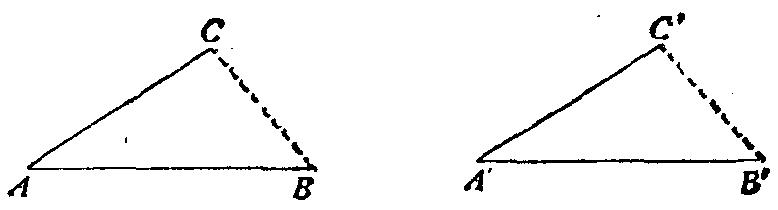

想起一个具有相同或相似结论的熟悉的定理。”
“当且仅当一个三角形的三条边分别等于另一个三角形的三条边时，这两
个三角形全等。”
图5
“做得好。本来你有可能会选出一条较差的定理的。现在这里有了一条与
你的问题有关的定理，且早已证明，你能否利用它?”
“如果我知道 BC=B'C' ，我能利用它。”
“对!那么你的目标是什么?”
“证明 BC=B'C' 。”
“试回忆起一个具有相同或相似结论的熟悉的定理。”
“是的，我知道一个定理，它最后结束的句子是：‘……则两线相等’，
但它并不合适。”
“为了能够利用它，你是否应该引入某个辅助元素?”
“你看，在图中 BC 与B'C'间并无联系，你怎么能证明 BC=B'C'? ”
…… ……
“你利用了前提吗?前提是什么?”
“我们假定 AB ∥A'B'， AC ∥A'C'。是的，当然我们必须利用这点。”
“你是否利用了整个前提?你说 AB ∥A'B'，这是你所知道的关于这些线段的
全部情况吗?”
“不，根据作图， AB 还等于A'B'。它们彼此平行并且相等。 AC 和A'C'也是
这样。”
“两个等长的平行线——这是很有趣的图形。你以前见过吗?”
“当然见过!对!平行四边形!让我联结 A 与A'， B 与 B'， C 与C'。”
“这主意不太坏。现在你的图中有几个平行四边形?”
“两个。不，三个。不，两个。我意思是说，其中有两个，你可以立刻证
明它们是平行四边形。还有第三个看来是个平行四边形。我希望我能证明它是。
这样证明就结束了!”
我们可能从这个学生前面的回答已经推测到他很聪明。但是等他作出上述
最后一个回答以后，我们对此就深信不疑了。
这个学生能够猜出数学结果并且能够清楚地区分证明与猜测。他也知道猜
测可以多多少少似乎是可信的。确实，他真的从数学课上得到了教益；他在解
题方面有了某种实际经验，他可以看出并且摸索出一个好的解题思路。